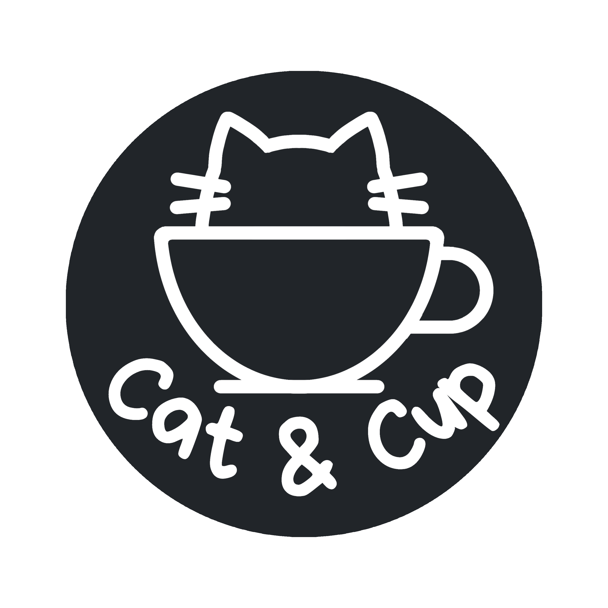

En Cat & Cup, el café es nuestro idioma favorito. Todo comenzó con una búsqueda simple pero exigente: encontrar ese grano perfecto capaz de regalar una pausa real, un respiro en medio del ritmo acelerado del día a día. Así nació este espacio, pensado para quienes entienden el café no como un trámite, sino como una experiencia sensorial.
Creemos firmemente que un gran café comienza mucho antes de llegar a la taza. Por eso, colaboramos de cerca con productores que priorizan la sostenibilidad y el cuidado en el cultivo. Cada variedad que ofrecemos en Cat & Cup ha sido cuidadosamente evaluada por expertos para garantizar un producto final excepcional, lleno de matices, aromas y cuerpo.
Queremos acompañarte en tus mañanas, en tus momentos de enfoque o en tus pausas de descanso. Te invitamos a explorar nuestra selección y descubrir un mundo de sabores hechos a la medida de los verdaderos amantes del café.